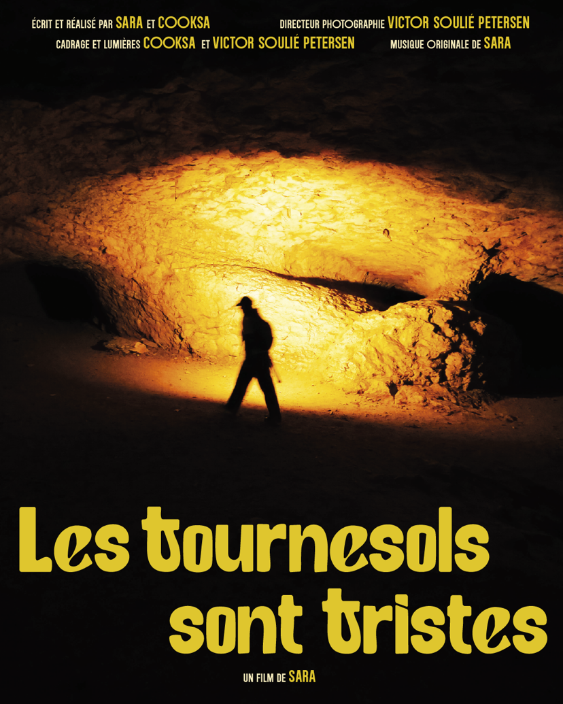
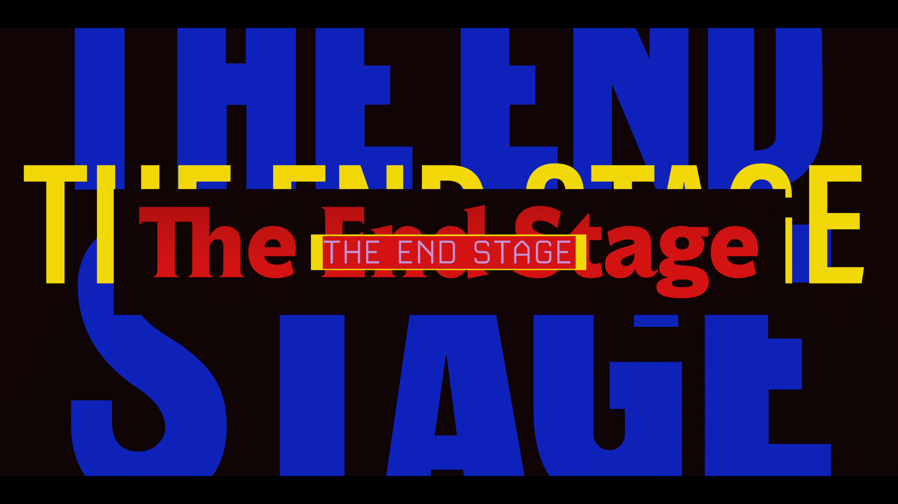
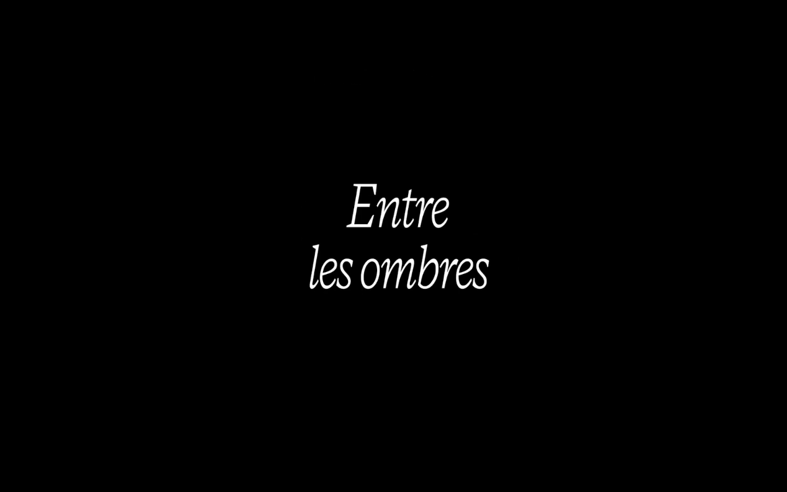
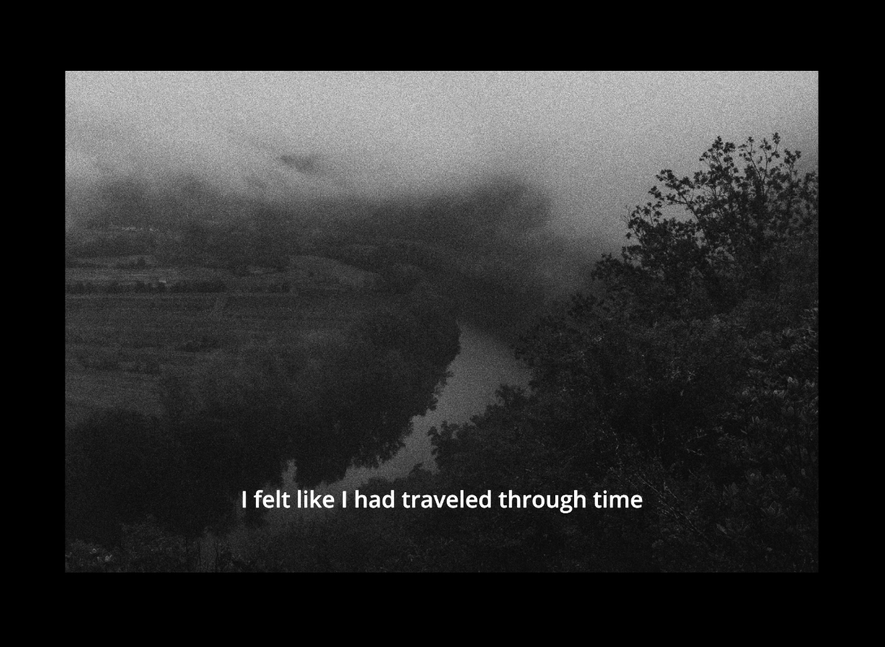
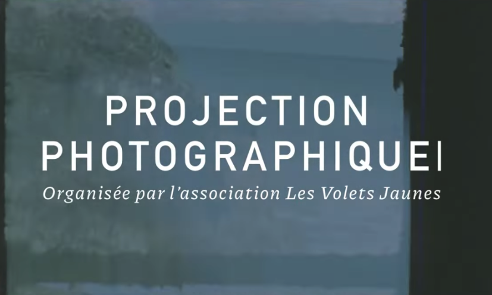
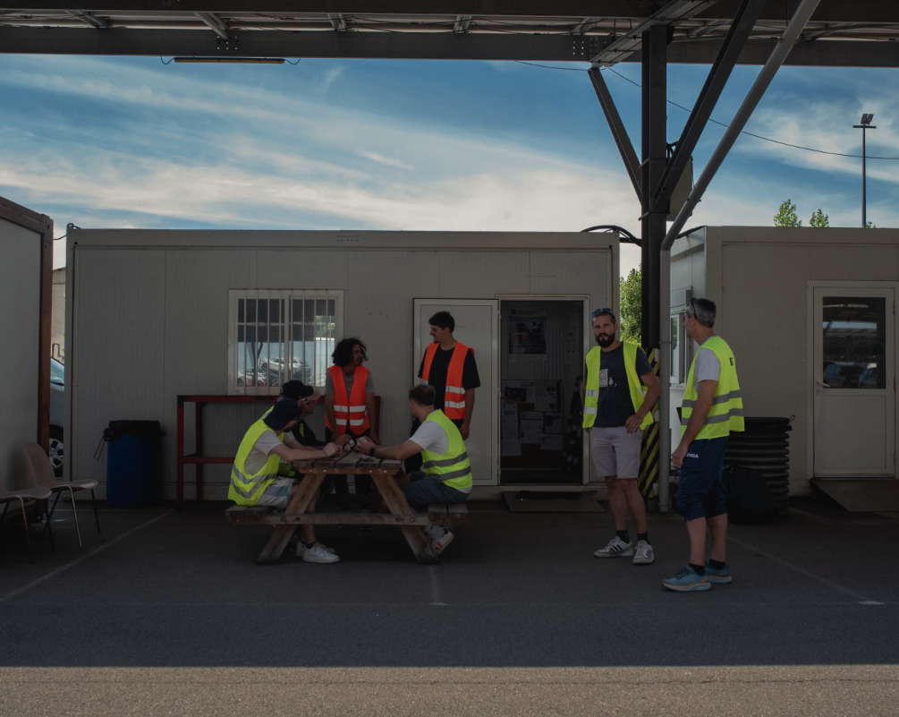
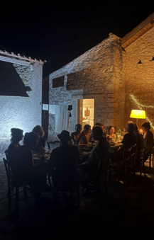

LES TOURNESOLS SONT TRISTES, short film, 2025
Watch here.
Written and produced by Sara Boulet
Director: Sara and Cooksa
Photography director: Victor Soulié Pertersen
Lights: Cooksa and Victor Soulié Pertersen
Mixage and mastering: Charlène Levasseur

THE END STAGE, documentary film, 2025
Welcome on board The Train of Capitalism.
The End Stage is a documentary film directed by South Korean director Seungjae Oh. It is a pointed look at the COVID-19 pandemic and capitalism. Oh brings together an international cohort of thinkers to contemplate the connection between COVID-19, capitalism, and climate change. These thinkers include Pulitzer Prize journalist and author Laurie Garrett, American academic and animal behaviorist Temple Grandin, and NASA’s climatologist Gavin Schmidt. Philosopher Slavoj Zizek sets the stage by claiming that first-world societies are riding comfortably on a train while the effects of global warming torment the rest of the world. However, if we do not pull the emergency brake, our train will collide head-on to an oncoming train.
Walter Benjamin: “Marx says that revolutions are the locomotive of world history. But perhaps it is quite otherwise. Perhaps revolutions are an attempt by the passengers on this train—namely, the human race—to activate the emergency brake.”1
1 Benjamin, Walter.,
Eiland, Howard., Smith, Gary. Selected
Writings: 1938-1940. United Kingdom:
Belknap Press, 1996. pp 402.
Director: Seungjae Oh
Design animations, title and endtitle sequence: Aaron Björk
Sound production: Kasper Kaae, Petra
Sound design: Nat Bradley
Ending title song: Charlène Levasseur

Restitution of workshop with Gabrielle Duplantier, Photography film, 2025
Watch here.
An independent photography film featuring interviews images taken in a intensive workshop during summer 2025, including images from the participants.
Director: Julia Castel and Gabrielle Duplantier
Video production: Julia Castel and Gabrielle Duplantier
Photography editing: Julia Castel and Gabrielle Duplantier
Sound editing: Charlene Levasseur
Mixage and mastering: Charlene Levasseur

Restitution of workshop with Michael Ackerman, Photography film, 2024
Watch here.
An independent photography film featuring interviews images taken in a intensive workshop during summer 2024, including images from the participants.
Director: Julia Castel and Michael Ackerman
Video production: Julia Castel and Michael Ackerman
Photography editing: Julia Castel and Michael Ackerman
Sound editing: Charlene Levasseur
Mixage and mastering: Charlene Levasseur

Restitution of workshop with Patricia Morosan, Photography film, 2024
Watch here.
An independent photography film featuring interviews images taken in a intensive workshop during summer 2024, including images from Anna Sweden, Marie Julliard, Vincent Boissonnat, Catherine, Virginie Gueguen.
Director: Julia Castel and Patricia Morosan
Video production: Julia Castel and Patricia Morosan
Photography editing: Julia Castel and Patricia Morosan
Sound design: Charlène Levasseur and Marie Deback
Sound editing: Charlène Levasseur
Mixage and mastering: Charlène Levasseur

CROISEMENT, photography film, 2024
Watch here.
As part of the ‘Résidence 1+2 Hors les murs #8’ programme, organised with the support of the Town of Castelnau d’Estretéfonds (31) and in partnership with the association Le Capech à la Côte, I developed a photographic project on Eurocentre, a jointly planned development zone situated at the junction of several European transport routes to the north of Toulouse.
"Croisements" est le récit d’une immersion de trois mois au cœur d’une ZAC, axé sur ses points de rencontre, ses frictions silencieuses et les personnes qui lui donnent corps et humanité. Là où les infrastructures semblent primer, j’ai cherché à saisir les petites lueurs : gestes, regards, présence d’animaux et détails du paysage qui témoignent d’une négociation permanente entre les systèmes industriels et les organismes vivants.
Director: Pauline Dupin
Production: Mediatheque d'Estretefond, Aurore Degoit, Dorris France-Oillan Menyé et Cathy Tran Tu San.
Photographies: Pauline Dupin
Video production and photography editing: Pauline Dupin and Maxime Duhamed
Music written: Charlene Levasseur
Mixage and mastering: Charlene Levasseur

Restitution of workshop with Martin Bogren, Photography film, 2024
Watch here.
An independent photography film featuring interviews images taken in a intensive workshop during summer 2023. Intuitive photography with Martin Bogren. Martin Bogren is a Swedish photographer based in Berlin. Since 2008 he has been the author of critically acclaimed photobooks including Tractor Boys, Italia, August Song, Passenger and his recently published Metropolia. He has exhibited at numerous galleries internationally and is represented by Galerie VU in Paris.
Director: Patricia Morosan
Video production: Julia Castel and Patricia Morosan
Photography editing: Julia Castel and Patricia Morosan
Sound editing: Charlène Levasseur
Mixage and mastering: Charlène Levasseur